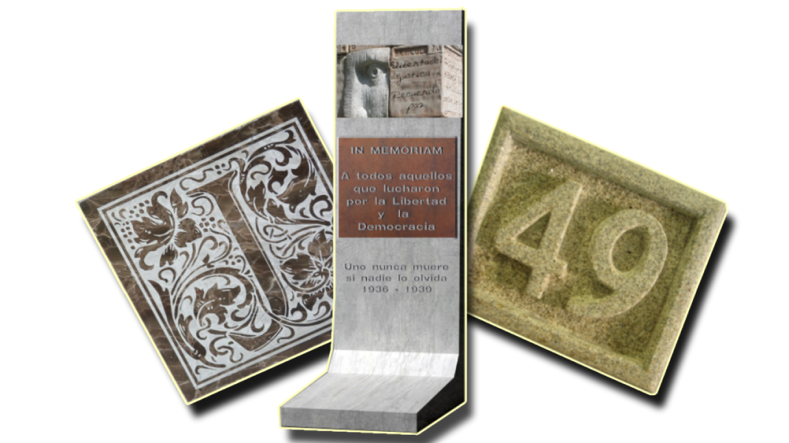
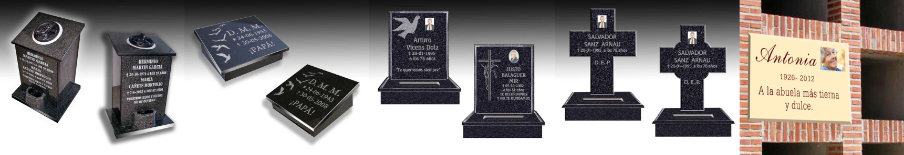
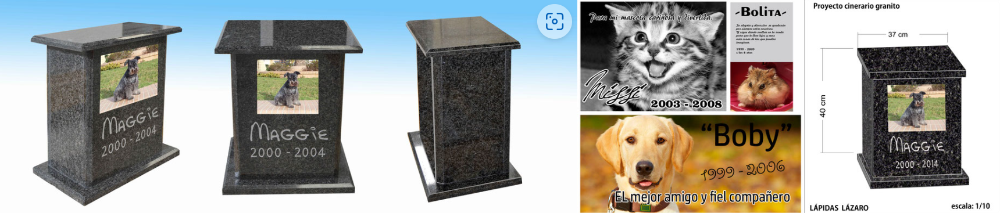
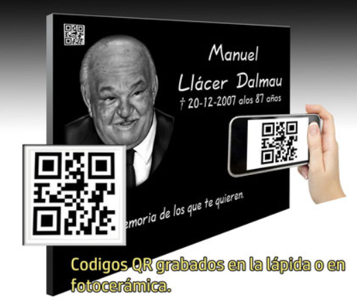

Las nuevas tecnologías aplicadas al negocio de los difuntos son ya una realidad que manejan los talleres artesanos y que ha abierto las puertas a otras empresas secundarias y subcontratadas que ya trabajan mano a mano con las empresas aseguradoras. Sin embargo, quienes llevan toda una vida trabajando en el arte funerario se revuelven ante el uso de una tecnología que han abierto la puerta al intrusismo laboral en el sector. "Hay mucha gente que vende lápidas, pero no sabe hacer lápidas". Así lo resumen desde Lápidas Lázaro, una empresa con más de 50 años de experiencia que va camino de incorporar al negocio a la tercera generación.
Fabricamos lápidas en granito, mármol y otros materiales. Trabajamos a demanda del cliente, creando presentaciones en 3D donde anticipamos los detalles , ajustes, para enviar a la fabricación final. Destacamos los acabados profesionales y la calidad de los materiales usados, con el añadido de una experiencia de 50 años ininterrumpidos, dos generaciones de marmolistas-lapidarios conectados. Fabricamos e integramos todos los componentes y accesorios. Diseñamos y creamos prototipos en 2d y 3d para producto final. En el departamento de foto-cerámica se digitalizan, retocan y crean imagenes religiosas y retrato de personas en porcelana, esmaltadas y cocidas a altas temperaturas en muflas, confiriéndoles así una resistencia extrema, garantizando la colocación de nuestros productos en exteriores sin alteraciones ni desgaste. Programamos y trazamos nuestros diseños en CAD para CNC en diversos formatos.
También sobre imágenes y motivos artísticos para máquinas láser, arenados, impacto y micro grabado. Todos los diseños y trabajos son desarrollados íntegramente en nuestras instalaciones, sin servicios externo.Placas
50 años de empresa
Panoramics la nueva serie de lápidas que cambiarán el concepto de la lápida tradicional. Lápidas con personalidad, con exclusividad y con multitud de diseños. Totalmente personalizadas, danos tu idea y nosotros la plasmaremos sobre la lápida para tener un trabajo único y diferente . Nuestro departamento y desarrollo artístico realizará los diseños y bocetos hasta plasmar la idea sobre la piedra.
Mini lápidas-Cinerarios para personas
Mini lápidas de nicho para pared , monolito y suelo en cementerio o parcela privada(chalet), terreno o campo particular, otra forma de recordar a nuestros seres queridos, con diferentes acabados y 100% personalizables.
Mini lápidas-Cinerarios para animales
Mini lápidas de nicho o monolito para suelo o terrenos particulares, para mascotas, nuestros fieles amigos que siempre están a nuestro lado, ahora ya pueden ser recordados con lápidas o monolitos funerarios en diferentes acabados y 100% personalizables.
Códigos QR
Código QR, mediante este encriptado de datos podemos acceder por medio de un terminal móvil smartphone o tablet y que tengan conexión a internet para poder enlazar a imágenes, archivos, videos de nuestro ser querido, que previamente habremos alojado en una web o servidor para que cualquier familiar, amigo o conocido mantenga siempre el recuerdo latente más allá de la lápida física.
